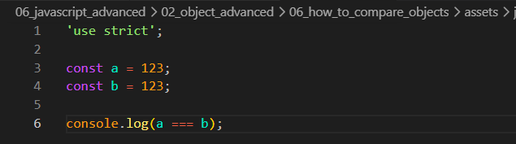
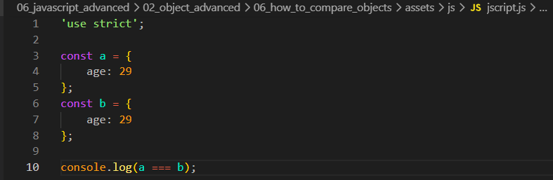
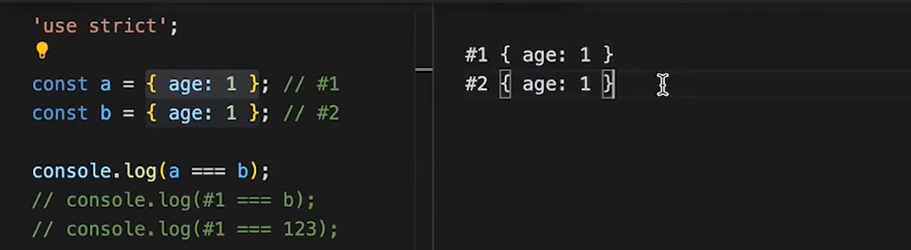
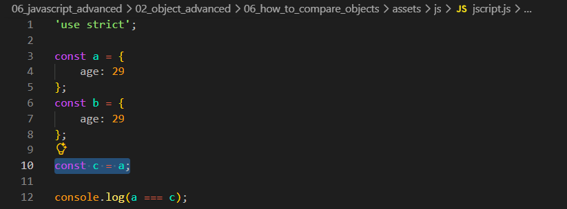

How to Compare Objects
Intro
Agora iremos ver como funciona a comparacao estrita em JS.
Agora iremos ver como funciona a comparacao estrita em JS.
JS:

Para isso iremos comecar criando duas variaveis sendo elas: a e b, apos isso podemos fazer uma comparacao:

Podemos observar que temos dois valores identicos em nossas variaveis, quando o JS compara esses valores ele faz basicamente da seguinte forma, pega o lado esquerdo a e o avalia em seguida faz o mesmo com o lado direito b, em seguida compara os compara e se o resultado for iguala verdadeiro nos retorna true se falso retorna false.
Se fizermos exatamente da mesma forma com dois objetos iguais, teremos um resultado diferente.

Nese caso mesmo com ambos objetos parecendo identicos, o JS cria um novo objeto na memoria com um endereco diferente.
Exemplo:

Aqui podemos entender melhor visualmente, do lado esquerdo temos nosso codigo e do lado direito uma representacao visual doque basicamente acontece, podemos observar que por mais que ambos objetos sejam semelheantes, porem diferentes.
Com isso para compara-los o navegador pega o que esta armazenado na variavel #1 depois #2, onde ficaria em uma comparacao como: console.log(#1 === #2); com isso nos sera retornado false.
Com isso nossos objetos so serao iguais apenas se referenciarem o mesmo objeto.
Para fazer isso iremos criar uma nova variavel que ira receber o valor da variavel que deseja ser comparada, exemplo:

Com isso atribuimos a variavel c oque esta armazenado na varaivel a, com isso foi armazenado sua referencia #1, com isso agora ambas tem a mesma referencia, com isso teremos como resultado true.